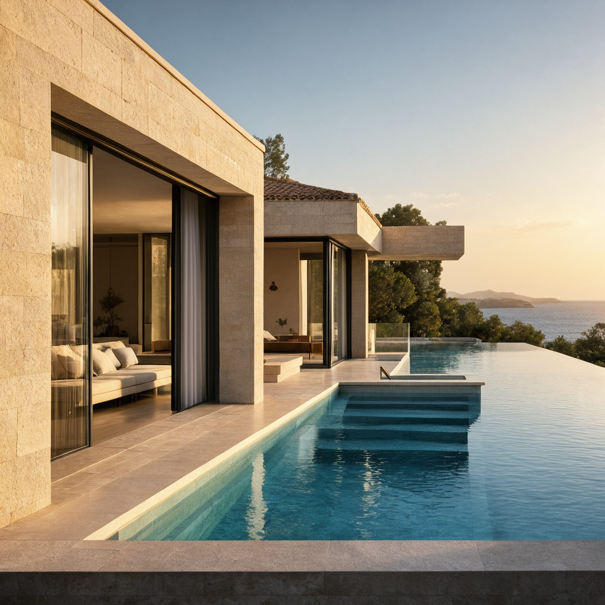

Designing with Light and Shadow
Light is not merely illumination — it is a construction material. How we shape, filter, and choreograph it defines the emotional quality of space.

Louis Kahn famously said, "The sun never knew how great it was until it hit the side of a building." We would add: the building never knew its own form until the sun revealed it. Light does not just illuminate architecture — it completes it.
In our practice, light is treated as a primary design material, alongside stone, wood, and concrete. We model it, simulate it, and choreograph it with the same rigor we apply to structure. But unlike structure, light is temporal. It moves. It changes color. It appears and disappears. Designing for light means designing for time.
The Three Light Conditions
We design for three distinct light conditions, each with its own emotional register and architectural potential.
Direct Light — Sunlight
Direct sunlight is the most dramatic and the most challenging. It creates sharp shadows, high contrast, intense heat. But it also creates moments of revelation — a beam of morning light striking a stone wall, illuminating fossil inclusions invisible in diffuse light. We use direct light sparingly and deliberately: a clerestory aligned to the equinox sunrise, a roof aperture framing the noon sun at solstice, a west-facing slot that catches the last golden hour.
The key is control. Deep reveals, overhangs, screens, and louvers modulate direct light, transforming harsh glare into choreographed illumination. The mashrabiya screens of Hotel Amara filter Marrakech's intense sun into a constellation of geometric shadows that dance across tadelakt walls. The perforated bronze brise-soleil of Maison de Lumière casts patterns that move across gallery floors like a slow clock.
Diffuse Light — Skylight
Diffuse light is the architect's most reliable collaborator. It comes from the entire sky dome, casting soft shadows, rendering color faithfully, creating an atmosphere of calm equity. North-facing glazing, sawtooth roofs, clerestories oriented away from the sun — these are the tools for harvesting diffuse light.
The Gallery Wing of Maison de Lumière is a masterclass in diffuse light. Its sawtooth roof, parametrically optimized for Lyon's latitude, admits consistent north light while excluding direct sun at the summer solstice. The result: galleries illuminated by a shadowless glow of 300-500 lux, without artificial supplementation for 85% of operating hours. The art is seen as the artist intended — in light that does not distort.
Reflected Light — Bounced Light
Reflected light is the subtlest and most poetic. Light bounces off surfaces — a light-colored floor washing a ceiling, a water feature projecting rippled patterns onto a soffit, a light well carrying daylight deep into a plan. This is light once removed, once transformed. It carries the color and texture of the surfaces it has touched.
In The Quiet House, the ofuro's water surface reflects the zen garden onto the cedar ceiling — the garden doubled, the sky brought down. In Villa Solara, the infinity pool's travertine edge reflects the vaulted limestone soffit, extending the architecture into the water. These are not accidents; they are composed reflections.
Designing for Shadow
Shadow is not the absence of light — it is the shape of light's obstruction. A deep window reveal catches morning light, casting a sharp geometric shadow across a stone floor. A perforated screen filters harsh midday sun into a constellation of dancing points. A clerestory brings north light into a gallery, rendering color with perfect fidelity. These are not accidents — they are composed.
We design shadows with the same intentionality as light. The shadow of a column at noon. The shadow of a screen at three PM. The shadow of a roof overhang at solstice. These moving geometries animate static architecture, connecting occupants to the passage of time, the rotation of the earth, the seasons' turn.
Night: Architecture's Second Personality
At night, the choreography continues. We design artificial lighting not as a simulation of daylight but as its own composition — layers of accent, ambient, and task light that reveal the architecture's second personality. The building that is serene by day becomes poetic by night.
In our projects, night lighting follows a hierarchy: first, the navigation — path lights, step lights, subtle guidance. Second, the revelation — uplighting a stone wall, grazing a textured facade, highlighting a specimen tree. Third, the occupation — warm pools of light over dining tables, reading chairs, conversation areas. The result is a building that does not merely exist at night but performs.
The Ethics of Illumination
Light pollution is a real concern. Our exterior lighting is shielded, directed downward, timed to minimize ecological disruption. We specify warm color temperatures (2700K-3000K) that respect circadian rhythms — human and animal. We use motion sensors and astronomical timers so that light is present only when needed.
Inside, we design for human biology. Tunable white systems that shift from cool morning light to warm evening light. Blackout capabilities in bedrooms. Glare-free task lighting in workspaces. The architecture serves the occupant's rhythms, not the other way around.
Light is the most ephemeral and the most powerful of architectural materials. It costs nothing to harvest, everything to control, and its mastery distinguishes the memorable from the merely functional. To design with light is to design with time itself — to create spaces that breathe with the sun, that mark the hours and seasons, that connect their occupants to the cosmic rhythms that govern all life on earth.